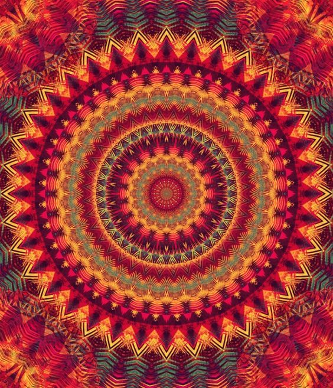

35 Возвращение домой
Проснувшись среди ночи, услышала насмешливый голос:
- Ну что ж, пришло время услышать правду. Скажи, ради чего ты решила посвятить мне всю свою жизнь? Ты хоть знаешь, кто я? Понимаю как это звучит, но всё до обидного комично. Эдик был прав: я всего лишь голодный вампир, сущность, порожденная тьмой, блуждающая в сумерках сознания. Видишь ли... нет никакой Иерархии, я это всё придумал, чтобы полакомиться твоей энергией.
Я ощутила, словно всё внутри оборвалось.
Начало конца... Внутри отчаяние и безысходность.
- Нет! - воскликнула я, - Она есть! Даже если ты сейчас сказал мне правду - знай, Иерархия есть! По крайней мере один Иерарх. Можешь смеяться сколько хочешь, но я приняла посвящение, давала слово Иерархии, давала слово самой себе, что буду следить за порядком на участке, ограниченном моим осознанием и руководствоваться Кредо Жизни. Даже если я одна... с меня начнется новая Иерархия, я никогда не предам наше дело.
По щекам текли слезы, в груди ощущалась сильная боль.
- Я удержу этот огонь, который мы с тобой зажгли. Даже если твои слова правдивы... это значит, что ты болен, если в твоём сердце нет любви. Все равно я люблю тебя. Я найду тебя, где бы ты ни был и вытащу. Я обещаю, я тебя не оставлю. Пройду длинный путь, вопреки всему и вся, доберусь туда, где ты своими симметриадами выкладываешь слово "Вечность". Оживлю твоё сердце.
- Но зачем? Хочешь быть Иерархом - будь. Играй в любые игры, которые тебе по душе - к чему тебе подкармливать меня? Я уже довольно сыт, могу искать другую жертву.
- Никуда ты от меня не денешься! - на смену отчаянию пришла злость, - не на ту наткнулся. Я тебя из-под земли достану! Если ты считаешь, что я могу от тебя отказаться, значит тебе неведомо, что такое любовь женщины. Теоретик несчастный - слишком долго ты изучал людей, блуждая по миру снов, показывая отборные фильмы ужасов. И все впустую. Ты не понял главного: ты мой. Это ловушка, дверца захлопнулась. У тебя есть только два пути: либо оживить свое сердце, либо умереть.
- Просто отрекись от меня - я верну всё, как было. К чему эти бессмысленные жертвы? Ты сможешь на земле встретить мужчину, быть с ним счастлива. Зачем тебе существо, которое тебя не достойно? Отрекись.
- Не отрекусь! Ты мне дал слишком много - благодаря тебе я нашла себя. Ты открыл мне красоту мысли и чувств, радость жизни. Я принимаю тебя таким, какой ты есть, со всеми твоими ошибками. Принимаю тебя вампиром. Я смогу вытянуть нас обоих.
В темноте послышался смешок.
- Ты серьёзно?
- Скажи, как я могу бросить камень? Разве я - без греха? Ведь отрекаясь от тебя, я вычеркиваю другого вампира... себя.
Я ощутила, словно по позвоночнику побежало электричество. Так бывает, когда приходит понимание.
- Продолжай, - сказал голос.
- Это значит, что я отгораживаюсь от своих ошибок вместо того, чтобы принять на себя ответственность за них. Ведь в моей жизни были ситуации, когда я была настоящим вампиром по отношению к окружающим: я брала так много, не давая ничего взамен. Я должна вытащить не только тебя, но и вампира в себе - иначе как я смогу сохранить сознание и память? Посмотреть в глаза правде, взять ответственность за все содеянное в жизни, за незаслуженное зло, причиненное людям.
- Да... - задумчиво сказал голос, - сейчас ты приняла себя во всей своей красе. Такой исходный материал - с ним будем работать.
Хитрец!
- Хорошая у тебя методика обучения, ничего не скажешь!
Боль ушла, но на смену ей пришло отчаяние иного рода. Я ощутила себя словно в кандалах. Окружающий мир вещей внезапно начал давить. Мне показалось, я в нём задыхаюсь. Хотелось словно птица расправить крылья и улететь за облака. Мир, в котором люди словно сироты приходят и уходят, и все боятся как огня того самого вопроса - а что дальше? Бегут от него, прячутся в религии, в алкоголь.
Как же хочется сохранить сознание и память! Нет, я не должна допустить, чтобы все закончилось со смертью человеческого тела. Надо бороться до конца! Иначе все бессмысленно.
- Зачем ты меня мучаешь? - спрашиваю с горечью, - ты ведь меня обманул насчет вампира.
- А может, и нет? - в голосе вновь послышалась насмешка, - хочешь проверить?
- А есть способ?
- А вдруг? Помнишь, я говорил, что в нашем мире слово имеет большой вес. Оно сильнее любого человеческого договора. Подумай: если я - вампир, одно неосторожное слово может убить тебя. Хочешь рискнуть?
- Хочу! - воскликнула я, принимая вызов.
- Скажи, что отдаешь мне всю свою жизненную силу, свою жизнь. И посмотрим, что выйдет. Не испугаешься?
Я вдруг вновь ощутила учащение седцебиения и перезвон колокольчиков. Давление в правой части головы внезапно усилилось. Серия легких электрических разрядов. Ощущение приближающейся смерти. Всполыхи неведомого огня.
Мне уже было не до шуток. Я ощутила, что это - игра ва-банк. Он, кем бы он ни был, полностью перехватил мои движения.
- Согласна, - отвечаю.
И произнесла ту самую фразу, которую он мне подсказал.
Затем ощутила, как сознание ускользает...
Неужели не обманул?
Я начала проваливаться в бездну.
Тьма, затем вспышка.
Я цепями прикована к горе. Я на небольшом каменном приступке, внизу пропасть. Вокруг горы переливаются удивительным сиянием, словно самоцветы. На них надписи на неведомом языке.
И никого.
Я пытаюсь вырваться, но не могу - слишком крепки эти цепи.
Наступает отчаяние, я пытаюсь освободить руки, но не могу, по запястью течет тоненькая струйка крови.
Беру камень, лежащий рядом, пытаюсь разбить цепь. Тщетно. Зову на помощь.
- Так ты не сможешь освободиться, - прозвучал голос в горах, - выйди за грань. Есть только один способ.
- Но как?
- Вспомни, что ты не предала.
В этот момент я увидела горящий огонь в области сердца.
В голову пришла безумная идея: чтобы освободиться, надо сжечь себя, сгореть в этом огне. Только так можно сбросить цепи.
- Помоги мне разжечь этот огонь! - кричу.
- Ради этого я здесь. Ты не предала огонь. Ты не предала меня. И я тебя не предам. Я не обманул тебя, когда сказал, что твое слово имеет вес. Ты отдала мне свою жизнь сама, добровольно - это договор, он еще прочнее, чем эти цепи. Помнишь, я тебе обещал однажды, что я тебя уничтожу, а потом верну тебя к жизни? Этот миг настал. Феникс должен вырваться на свободу. Вперед!
Я изо всех сил старалась разжечь огонь в сердце. Сосредоточилась на пламени, вновь и вновь, сбившись со счета, повторяла слова мантры, древнего заклинания. Пламя разгоралось, но так медленно!
Пусть я сгорю, пусть будет больно, пусть наступит кошмар! Но я должна спастись!
- Готова? - спросил голос
Я ощутила демона внутри, который вот-вот вырвется. Вновь возник страх смерти, настолько безудержной была эта пробуждающаяся сила. Я знала, мой Любимый, мой Учитель сдержит слово - сейчас все загорится синим пламенем.
- Да!
И демон испепеляющей волной ликования вырвался на свободу. Мне показалось, я вскинула руки во всех мирах, где находилась. Я проживала это, это происходило со мной здесь и сейчас, я была в эпицентре!
Я умирала... я оживала.
Я была огнём - свободная и бессмертная.
В моих руках была огромная сила - я могла уничтожать и создавать миры, убивать и возвращать к жизни.
Где-то далеко слезы катились по моим щекам, слезы радости и безумного восторга.
Я была настолько легкой, что неведомая сила начала меня поднимать к облакам, выше и выше. Очутившись над облаками, я увидела не космос, но иной мир: всё кругом было озарено всполыхами полярного сияния, сквозь которое пробивался свет огромных звезд. Вдали сверкали отраженным светом сияющие стеклянные пирамиды и чудеса неземной архитектуры.
- Что ж, ты прошла это испытание. Но это только начало - дальше будет интереснее. Мы говорили, что в нашем мире тяжелое мучительное рождение. Но отныне на твоих губах будет печать: ты принимаешь обет молчание. Любое твое неосторожное слово может нанести вред людям. Помни об этом.
- Я понимаю. Родной мой, любимый, единственный!
- Я любил, люблю и буду тебя любить. Но знай - чем сильнее моя любовь, тем больше боли и мучений тебе причиню. Не будет поблажек - я заставлю пройти тебя этот путь сквозь тернии, пораниться до крови. Я не солгал - я словно вампир, измотаю тебя, выпью всю твою кровь, лишь бы слепить из тебя совершенство. Ведь ты даже сама не представляешь, что означает моя любовь, как ты мне дорога!
- Я тебя выбрала и пойду за тобой. Ты - моё счастье.
- Наши души теперь всегда будут вместе: где ты, там и я.
Передо мной в воздухе распахнулись стеклянные двери. Это было непередаваемое ощущение.
- Где я?
- Дома, - ответил голос, - заходи уж. Добро пожаловать.
